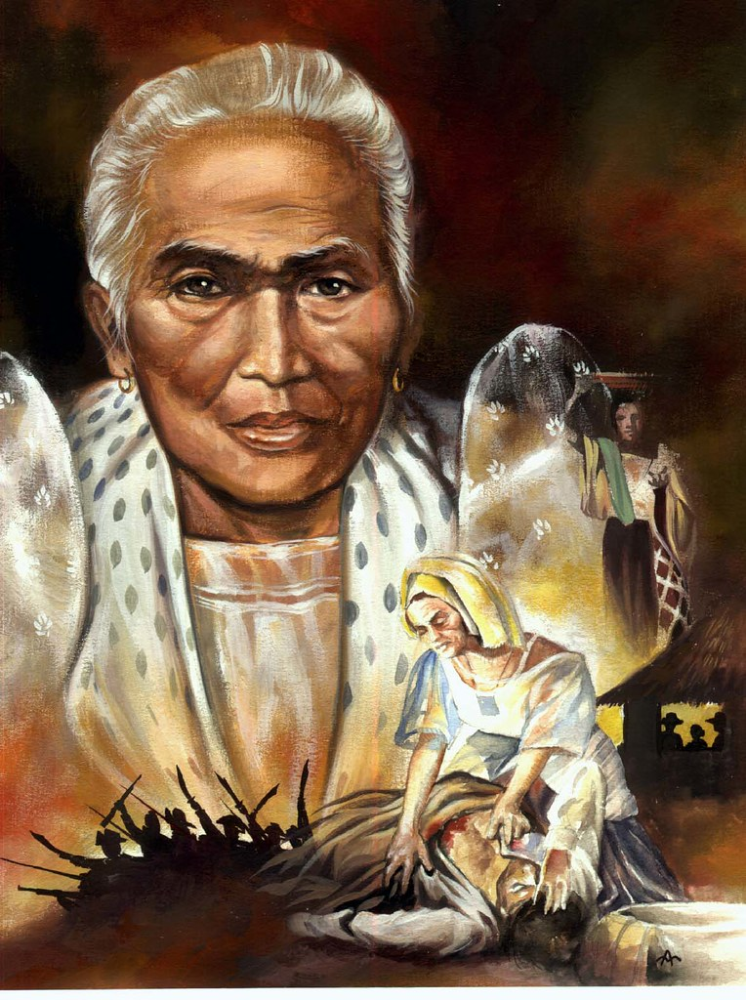
She is also known as "Tandang Sora," played a crucial role in the Philippine Revolution against Spanish rule. Her short contribution involves providing shelter, food, and nursing care to Filipino revolutionaries, earning her the title "Mother of Balintawak." enduring personal sacrifices such as the confiscation of her property and exile, and becoming a symbol of Filipino courage and patriotism. Tandang Sora's legacy is celebrated in the Philippines, with various landmarks named in her honor.
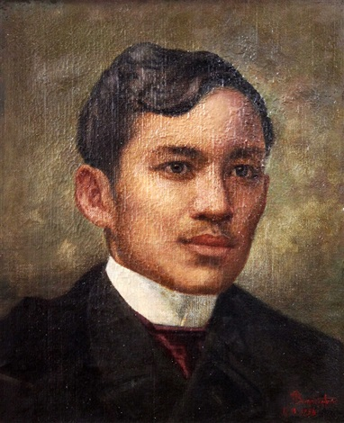
He contributed to Philippine independence through literary works exposing colonial abuses, advocating peaceful reform, founding La Liga Filipina for civic unity, enduring exile and martyrdom, and inspiring later revolutionaries, ultimately contributing to the Philippine Revolution and independence in 1898. Through his writings, such as "Noli Me Tangere" and "El Filibusterismo," he exposed injustices under Spanish colonial rule, inspiring a sense of nationalism.
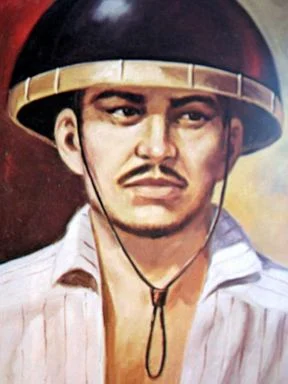
He was a key figure in Philippine history, leading the Ilocos Revolt against Spanish colonial rule during the late 18th century. Born in 1730, he seized the opportunity during the British occupation of Manila in 1762 to rebel against the Spanish, forming an independent government in Vigan. Despite facing challenges and betrayal, his contributions to the fight for Philippine independence remain significant. His legacy symbolizes courage, resistance, and patriotism in the country's history.
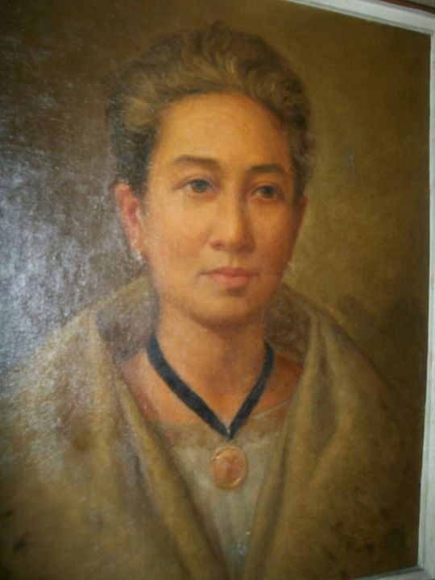
She is born June 24, 1879, played a key role in creating the first Philippine flag commissioned by President Emilio Aguinaldo in Hong Kong. Alongside Lorenza Agoncillo and Delfina Herbosa de Natividad, she designed the "Katipunan flag," unveiled on May 28, 1898, symbolizing the nation's quest for independence with a sun, eight rays, and a triangle representing Luzon, Visayas, and Mindanao. The flag remains a lasting symbol of Filipino identity and nationalism.
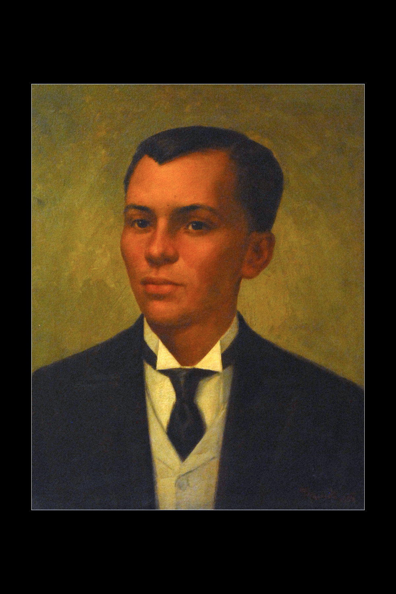
He is born on November 30, 1863, was a pivotal figure in the Philippine Revolution against Spanish rule. He founded the Katipunan in 1892, leading it in battles against Spanish forces and inspiring Filipinos to join the cause. The Cry of Pugad Lawin in 1896 marked the start of open rebellion. He convened the Tejeros Convention in 1897, but internal conflicts led to his arrest and execution.
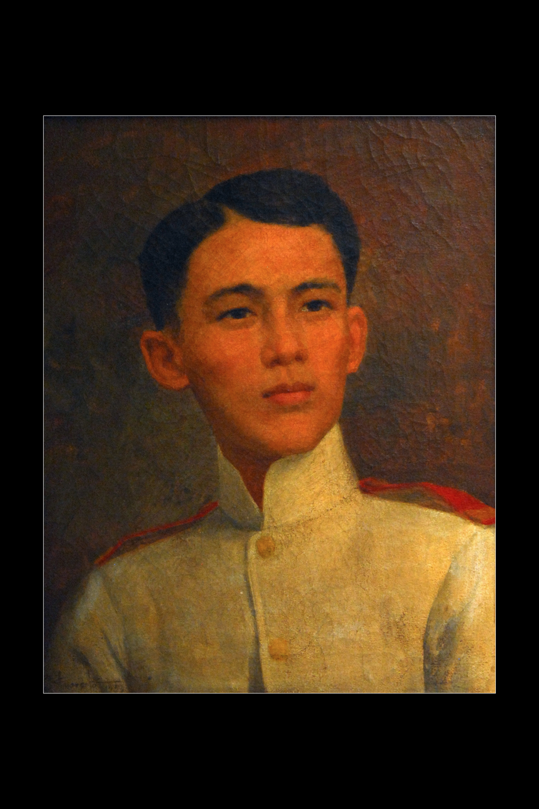
He is born on November 14, 1875, was a Filipino military leader during the Philippine Revolution and the Philippine-American War. He joined the Katipunan and served as a general in the revolutionary forces. He is best known for his heroic defense of Tirad Pass in 1899, where he sacrificed his life to allow Emilio Aguinaldo to escape. His bravery earned him the title "Hero of Tirad Pass" and made him a symbol of Filipino patriotism and resistance.
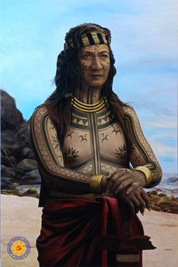
He is called the Datu of Mactan, is celebrated for leading the resistance against Spanish colonization in the Battle of Mactan in 1521. His victory, which resulted in the death of Ferdinand Magellan, symbolizes early Filipino heroism and resistance against foreign oppression. He is recognized as the first Filipino hero, and a monument, the Lapu-Lapu Shrine, honors his role in Philippine history.
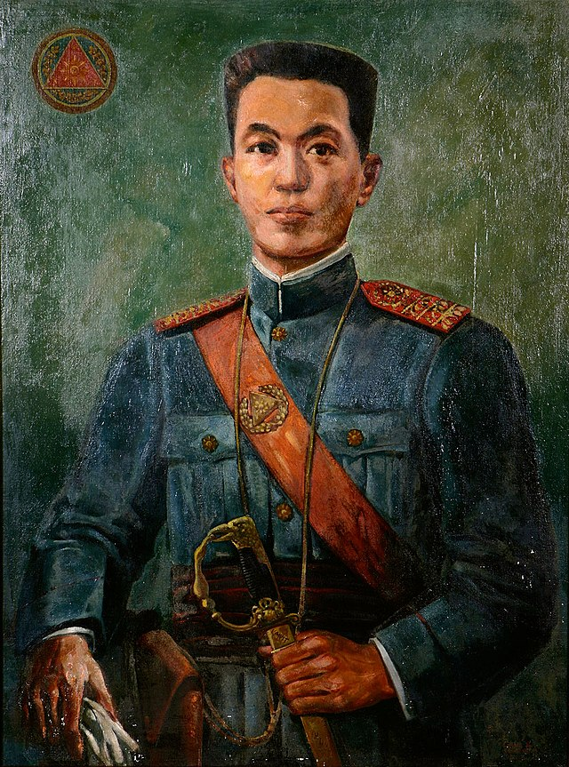
He is born on March 22, 1869, was a key leader in the Philippine Revolution. He declared Philippine independence on June 12, 1898, marking the establishment of the First Philippine Republic. He ed Filipino forces in the Philippine-American War and served as the first President of the Philippines from 1899 to 1901. Despite periods of exile and imprisonment, he continued advocating for Philippine independence, leaving a lasting impact on the country's history.
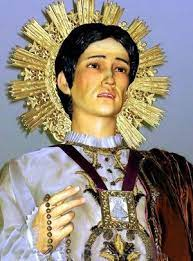
He is born in 1600, is recognized as the first Filipino saint and martyr. His significant contribution lies in his steadfast refusal to renounce his Christian faith during religious persecution in Japan in 1636. Enduring torture and choosing martyrdom over abandoning his beliefs, he became a symbol of unwavering faith. Canonized in 1987, he stands as an inspirational figure, embodying courage and commitment to Christian principles.
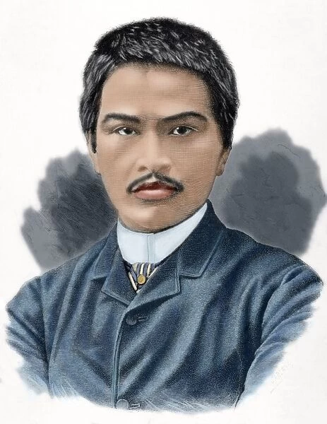
He was a renowned Filipino painter celebrated for his masterpiece "Spoliarium," which won international acclaim in 1884. Alongside Félix Resurrección Hidalgo, he levated Filipino art on the global stage, challenging stereotypes. In addition to his artistic prowess, he is also a nationalist and diplomat, contributing to the Propaganda Movement for political reforms. His legacy endures as a symbol of Philippine artistic excellence and national pride.
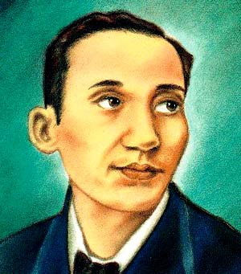
He is known as the "Brains of the Katipunan," was a key intellectual force in the Philippine Revolution. As political adviser and Prime Minister to Emilio Aguinaldo, he provided crucial insights for the First Philippine Republic. He authored "The True Decalogue," a guide to ethical governance, and advocated for Philippine independence, contributing to diplomatic efforts and social justice reforms. Despite physical challenges, his intellectual and leadership contributions left a lasting impact on the struggle for independence.
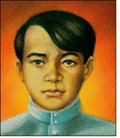
He was a prominent Filipino revolutionary known as the "Brains of the Katipunan." He played a key role in shaping the ideology of the revolutionary society, contributing significantly to the Kartilya ng Katipunan. He is also admired for his military leadership, was both the "Brains and Sword of the Katipunan." His advocacy for social justice and unwavering nationalism made him a symbol of the revolutionary spirit during the fight for Philippine independence.
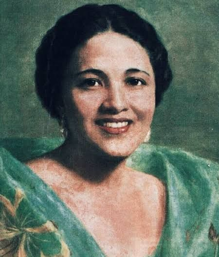
She is a brave Filipina leader who played a key role in the Philippine resistance against Spanish colonization. After the assassination of her husband, she took charge of the Ilocano uprising in 1763. She continued the fight for independence, leading troops and displaying exceptional leadership. Her significant contribution lies in her courage and dedication to the cause of Filipino freedom during a challenging period in history.
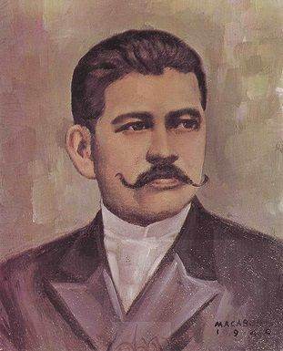
He was an important writer in the Philippines in the late 1800s. He used his writing skills to speak out against the mistreatment of the Spanish rulers. By editing and writing for publications like "La Solidaridad," he helped Filipinos become more aware of their rights and encouraged them to resist Spanish oppression. His works played a big role in preparing the way for the Philippines to eventually gain independence
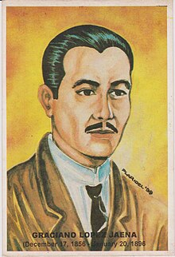
He is a brave writer who spoke out against the Spanish rulers. He wrote in a newspaper called "La Solidaridad" to tell people about the need for change and to unite against the unfair treatment. His work helped Filipinos realize their identity and stand up against the colonial rulers. He was one of the writers of "La Solidaridad" with other Filipino Reformists